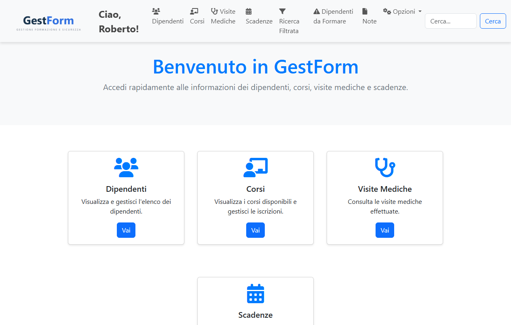
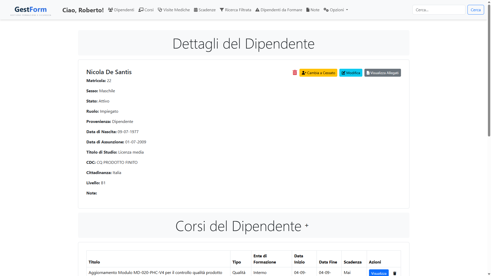
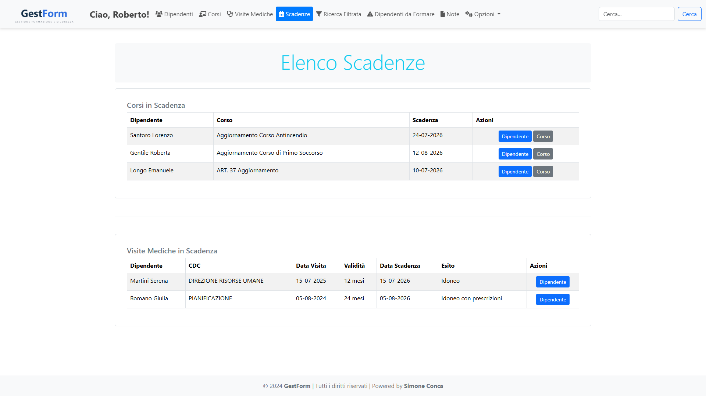
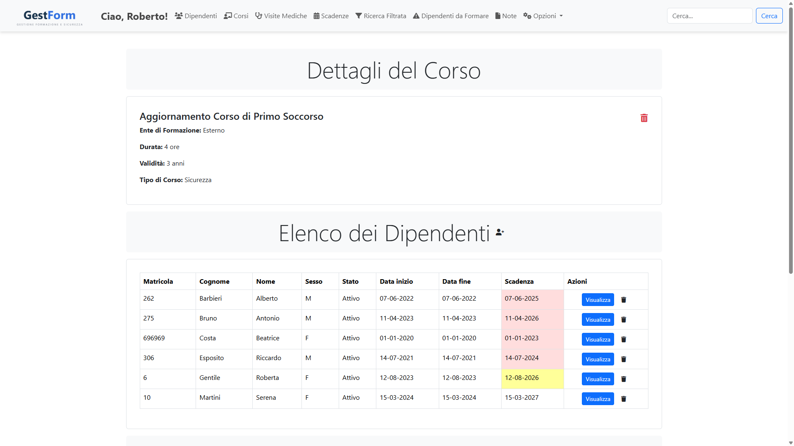
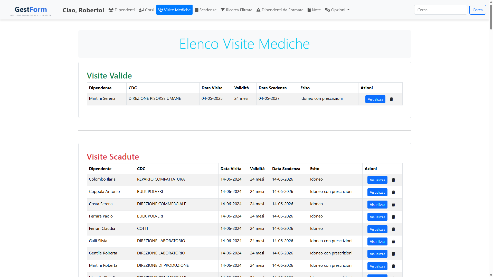
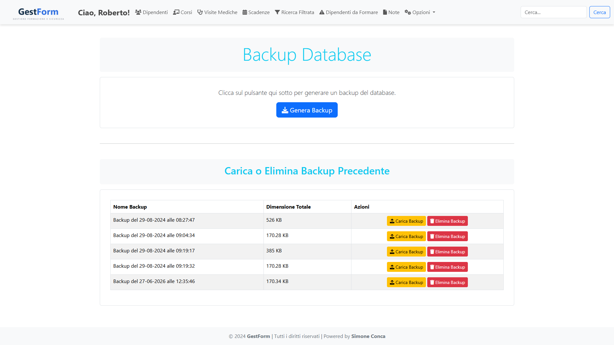

Anagrafica dipendenti
Dati personali, titolo di studio, centro di costo, livello e cittadinanza, con allegati per ogni dipendente.
Progetto / Gestionale aziendale · PHP + MySQL
Un gestionale web per tenere traccia di dipendenti, corsi di formazione, visite mediche e relative scadenze. È uno dei miei primi progetti, realizzato durante le superiori.
Una premessa. Questo è un progetto delle scuole superiori: lo presento così com'è, con tutti i limiti del caso. Non è un lavoro professionale né un prodotto finito — è il punto in cui ho imparato per la prima volta a mettere insieme un database, un po' di PHP e un'interfaccia, e ci sono affezionato proprio per questo.
L'obiettivo era dare a un'azienda un posto unico dove gestire il personale e i suoi obblighi formativi: l'anagrafica dei dipendenti, i corsi che hanno seguito, le visite mediche e — soprattutto — le scadenze, così da sapere in anticipo cosa va rinnovato.
È un'applicazione web pensata per girare in locale (con XAMPP): accesso con login, ruoli per gli amministratori e operazioni complete di inserimento, modifica e ricerca.
Alcune schermate reali del gestionale. I dati mostrati sono fittizi: nomi e anagrafiche dei dipendenti sono stati anonimizzati.






Dati personali, titolo di studio, centro di costo, livello e cittadinanza, con allegati per ogni dipendente.
Catalogo dei corsi per tipo, ente, durata e validità, con le iscrizioni collegate a ciascun dipendente.
Registro delle visite con esito, validità e data di scadenza, collegate al dipendente.
Una vista d'insieme di corsi e visite in scadenza, per non lasciare scoperto nessun rinnovo.
Ricerca avanzata con filtri combinabili per trovare in fretta dipendenti, corsi e situazioni specifiche.
Accesso con utenti e ruolo amministratore, con un controllo sui tentativi di login.
Backup e ripristino del database dall'interfaccia e un manuale utente integrato.
Un classico stack PHP + MySQL: le pagine sono in PHP, i dati in un database MySQL e l'interfaccia usa Bootstrap. Tutto pensato per girare in locale con XAMPP.
Gira in locale. Essendo un'app PHP + MySQL va eseguita su un server (qui XAMPP): le schermate qui sopra sono reali, con dati di esempio anonimizzati.